<!doctype html>
<html class="no-js" lang="en">
  <head>
    <meta charset="utf-8" />
    <meta name="viewport" content="width=device-width, initial-scale=1.0" />
    <title>
    
  Android Studio自定义工程模板 - MagicalRice的Blog
  
  </title>
  
  
  <link href="atom.xml" rel="alternate" title="MagicalRice的Blog" type="application/atom+xml">
    <link rel="stylesheet" href="asset/css/foundation.min.css" />
    <link rel="stylesheet" href="asset/css/docs.css" />
    <script src="asset/js/vendor/modernizr.js"></script>
    <script src="asset/js/vendor/jquery.js"></script>
 
<script type="text/javascript">
  function before_search(){
    var searchVal = 'site:adolph.cc ' + document.getElementById('search_input').value;
    document.getElementById('search_q').value = searchVal;
    return true;
  }
</script>
  </head>
  <body class="antialiased hide-extras">
    
    <div class="marketing off-canvas-wrap" data-offcanvas>
      <div class="inner-wrap">


<nav class="top-bar docs-bar hide-for-small" data-topbar>


  <section class="top-bar-section">
  <div class="row">
      <div style="position: relative;width:100%;"><div style="position: absolute; width:100%;">
        <ul id="main-menu" class="left">
        
        <li id=""><a target="self" href="index.html">Home</a></li>
        
        <li id=""><a target="_self" href="archives.html">Archives</a></li>
        
        </ul>

        <ul class="right" id="search-wrap">
          <li>
<form target="_blank" onsubmit="return before_search();" action="https://google.com/search" method="get">
    <input type="hidden" id="search_q" name="q" value="" />
    <input tabindex="1" type="search" id="search_input"  placeholder="Search"/>
</form>
</li>
          </ul>
      </div></div>
  </div>
  </section>

</nav>

        <nav class="tab-bar show-for-small">
  <a href="javascript:void(0)" class="left-off-canvas-toggle menu-icon">
    <span> &nbsp; MagicalRice的Blog</span>
  </a>
</nav>

<aside class="left-off-canvas-menu">
      <ul class="off-canvas-list">
        
        <li><a target="self" href="index.html">Home</a></li>
        
        <li><a target="_self" href="archives.html">Archives</a></li>
        

    <li><label>Categories</label></li>

        
            <li><a href="Android.html">Android</a></li>
        
            <li><a href="%E9%9A%8F%E6%89%8B%E8%AE%B0.html">随手记</a></li>
        
            <li><a href="%E6%9C%8D%E5%8A%A1%E5%99%A8.html">服务器</a></li>
        
            <li><a href="C++.html">C++</a></li>
        
            <li><a href="UI.html">UI</a></li>
        
            <li><a href="MySQL.html">MySQL</a></li>
        
            <li><a href="%E7%AE%97%E6%B3%95.html">算法</a></li>
        
            <li><a href="Game.html">Game</a></li>
        
            <li><a href="Python.html">Python</a></li>
        
            <li><a href="%E8%B7%A8%E5%B9%B3%E5%8F%B0%E5%BC%80%E5%8F%91.html">跨平台开发</a></li>
        
            <li><a href="Mac.html">Mac</a></li>
        
            <li><a href="%E5%85%B6%E4%BB%96.html">其他</a></li>
         

      </ul>
    </aside>

<a class="exit-off-canvas" href="#"></a>


        <section id="main-content" role="main" class="scroll-container">
        
       

 <script type="text/javascript">
  $(function(){
    $('#menu_item_index').addClass('is_active');
  });
</script>
<div class="row">
  <div class="large-8 medium-8 columns">
      <div class="markdown-body article-wrap">
       <div class="article">
          
          <h1>Android Studio自定义工程模板</h1>
     
        <div class="read-more clearfix">
          <span class="date">2020/03/25</span>

          <span>posted in&nbsp;</span> 
          
              <span class="posted-in"><a href='Android.html'>Android</a></span>
           
         
          <span class="comments">
            

            
          </span>

        </div>
      </div><!-- article -->

      <div class="article-content">
      <h2 id="toc_0">前言</h2>

<p>一直以来开发业务，总是要创建一批相同的初始代码，每次先写一个页面总是要创建新的Activity，新的xml，新的ViewModel或者新的Presenter，这样既麻烦又影响开发效率。Android Studio提供的代码模板可帮助我们减少重复编写同一段代码的负担，而且可以遵循优化后的设计和标准。AS采用的是Apache FreeMarker模板引擎。</p>

<span id="more"></span><!-- more -->

<h2 id="toc_1">工程模板路径</h2>

<p>Mac版Android Studio的模板路径位于<code>/Applications/Android\ Studio.app/Contents/plugins/android/lib/templates/</code></p>

<h2 id="toc_2">模板目录结构</h2>

<p>以比较简单的EmptyActivity为例</p>

<p>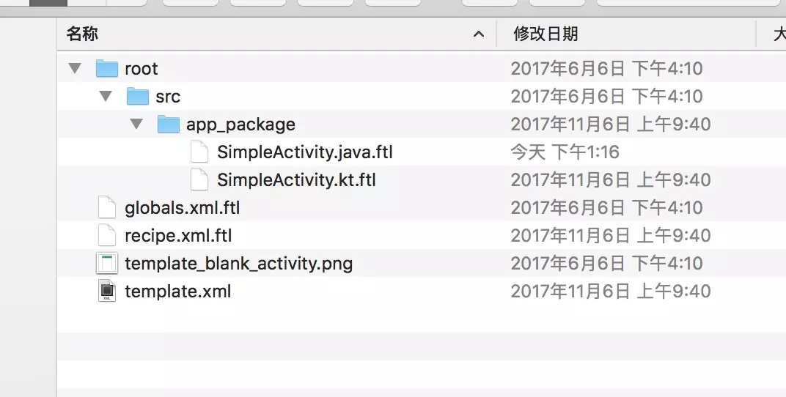</p>

<p>每一个模板存在于root文件夹下，其中：</p>

<ul>
<li>root: 存放模板文件及引入资源的目录，模板文件可以是.xml、.java、.gradle等任何一个文本格式的文件，资源一般是我们引入的.png资源文件</li>
<li>src:代码文件</li>
<li>globals.xml.ftl: 可存储全局变量以供其他模板文件统一引用</li>
<li>recipe.xml.ftl: 用于组合生成我们实际需要的代码文件和布局文件等。</li>
<li>template.xml: 面向模板引擎的配置文件</li>
</ul>

<p>真正核心的部分就是<code>root</code>、<code>recipe.xml.ftl</code>和<code>template.xml</code></p>

<p>打开 root 目录，能够看到里面的文件除了图片资源文件都是以<code>.ftl</code>结尾的，而<code>.ftl</code>是标准的 FreeMarker的文件。FreeMarker 是类似于 Velocity 的一种模板框架，据说对于多文件处理时它具有更好的性能，大概也是 Android Studio 选择 Velocity 作为单文件模板，选择 <a href="http://freemarker.org/">FreeMarker</a> 作为文件组模板的原因吧。有兴趣的可以去 FreeMarker 官网学习一下，它的自定义标签功能还是很强大的，个人感觉比 Velocity 的更加接地气。</p>

<p>globals文件中可以看到每一个变量的定义形式，id作为唯一标识，type标识变量类型，value表示变量值。<br/>
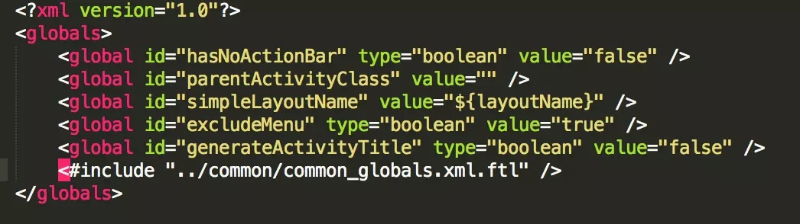</p>

<p>recipe.xml.ftl文件即使不懂freemarker引擎应该也可以大概看懂，</p>

<ul>
<li><strong>copy</strong> 就是简单的 copy，把模板 root 目录下的某个文件 copy 到目标工程的某个目录下</li>
<li><strong>instantiate</strong> 跟 copy 很类似，唯一多的一点功能就是并不只简单的走 IO 流进行 copy，而是通过 FreeMarker 框架按照模板中的 FreeMarker 能识别的逻辑判断和数据引入来生成最终的目标文件</li>
<li><strong>merge</strong> 目标项目中有了某文件，而我们还要想该文件合并一些我们的模板的部分时，就选用 merge，例如我们添加一个 Activity 时需要 mergeAndroidManifest.xml的配置。目前支持的 merge 格式有.xml和.gradle，但是对.gradle支持的不怎么好，不过不影响该模板的开发，对于这套模板引擎的开发者来说，这可能是最麻烦的部分了，但是对于我们使用者就不用考那么多了，直接使用吧</li>
<li><strong>open</strong> 这个很简单，就是指定模板引入之后要 IDE 打开的文件</li>
</ul>

<p>这里if判断可以轻松看出是根据用户选择生成的文件类型来生成Java文件或者kotlin文件。<br/>
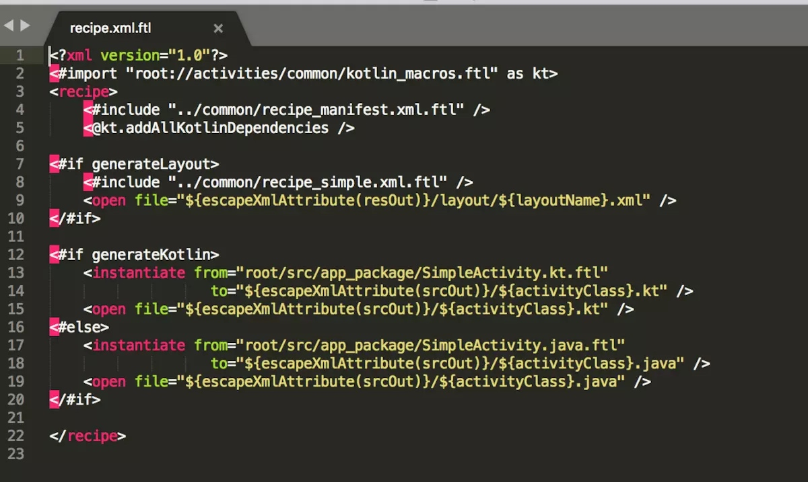</p>

<p><code>template.xml</code>文件就是模板界面了，主要由<code>parameter</code>标签获取用户输入的参数：</p>

<ul>
<li><code>template标签</code>
<ul>
<li><code>name</code> 引入模板时的模板名称，就是根据他选择哪个模板的</li>
<li><code>description</code> 弹出 Dialog 的标题</li>
</ul></li>
<li><code>category</code> 表示该模板属于哪种分类，在引入的时候会有个分类的选择</li>
<li><code>parameter</code> 每个该标签就对应 Dialog 界面的一个输入项
<ul>
<li><code>id</code>：唯一标识符，也用于其他文件变量查找引用(也是我们在.ftl中引入的值，例如定义的 id 为username，引用时就是$username)</li>
<li><code>name</code>：该标签的名称，同时将展示给用户</li>
<li><code>type</code>：参数类型，如boolean 、string等</li>
<li><code>constraints</code> 对应该参数的约束，如果有多个要用|分割开</li>
<li><code>suggest</code> 建议值，这个输入部分是由级联效应的，可能你改了 A 参数，B 参数也会跟着改变，就是根据这个参数决定的</li>
<li><code>default</code> 参数的默认值</li>
<li><code>visibility</code> 可见性，要配置一个 boolean 类型的参数，一般指向另一个输入源</li>
<li><code>help</code> 当焦点在某个输入源上面时，弹框下部显示限制的内容</li>
</ul></li>
</ul>

<p>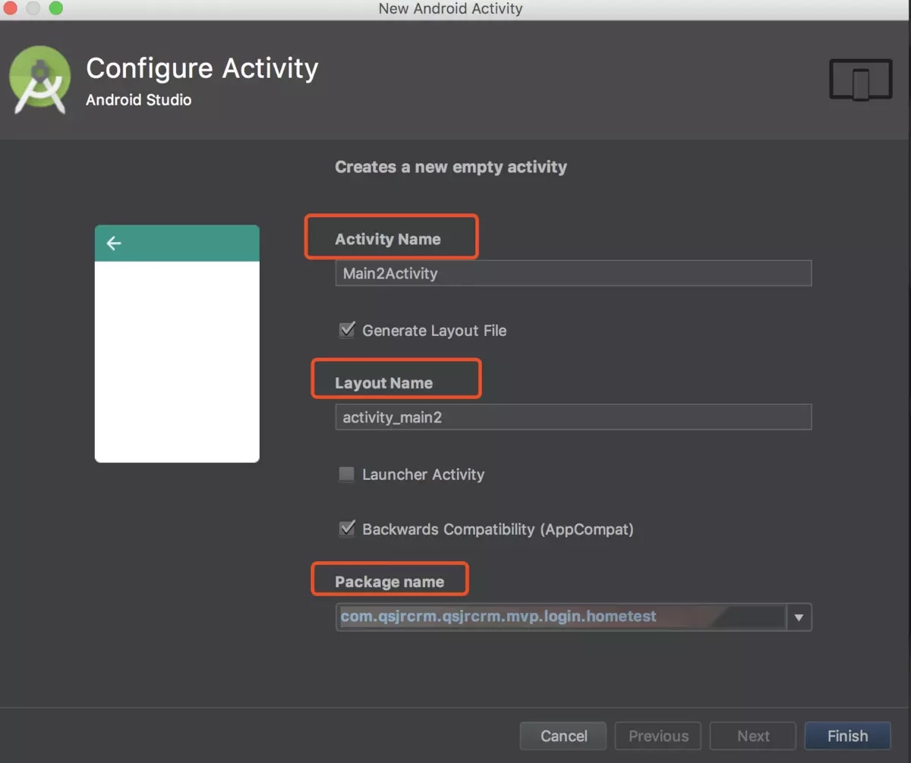</p>

<p>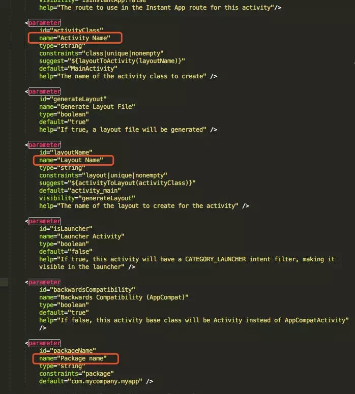</p>

<p>如果了解FreeMarker模板引擎，看过template目录下的官方模板代码，基本就能写出基础的模板代码。</p>

<h2 id="toc_3">TemplateBuilder快速创建模板引擎</h2>

<p>通过TemplateBuilder就可以一键支持创建模板，但是目前只支持Java，Kotlin需要对文件进行手动修改。</p>

<h3 id="toc_4">安装</h3>

<p>打开 Android Studio，<code>Preferences</code> – <code>Plugins</code> – <code>Brown Repositories</code>, 搜索<code>TemplateBuilder</code>并下载，下载之后重启 IDE 即可使用。<br/>
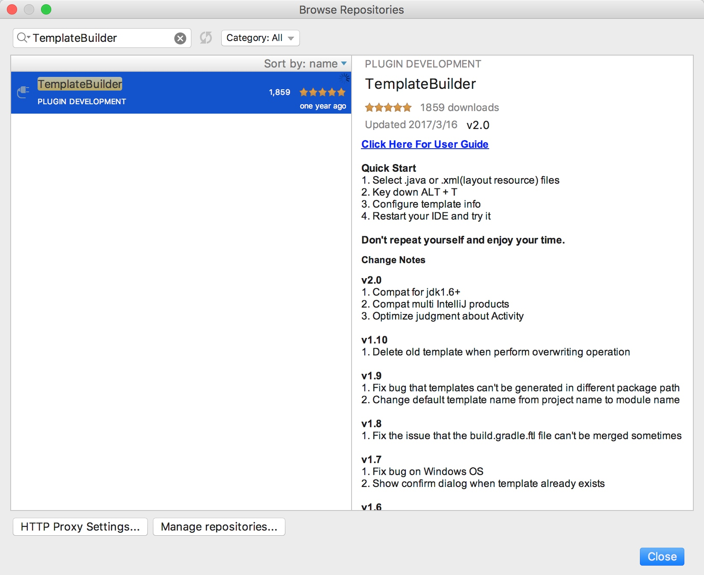</p>

<h3 id="toc_5">使用</h3>

<p><code>导出：</code> 选择待导出的文件或文件夹，按下<code>ALT + T</code>，在弹出界面中更改模板名称（MVP Test）和描述后直接<code>Finish</code>，然后重启 IDE；<br/>
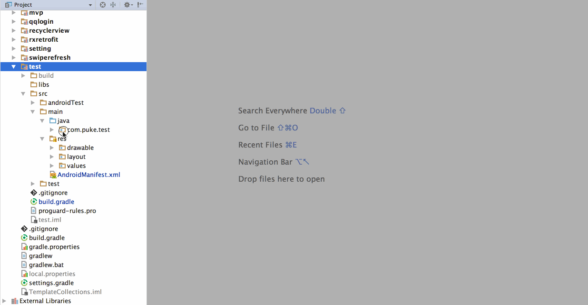</p>

<p><code>导入：</code> 选择一个包，按下<code>Command + N</code>键，输入模板分类名（默认为电脑用户名），选择MVP Test模板进行导入。<br/>
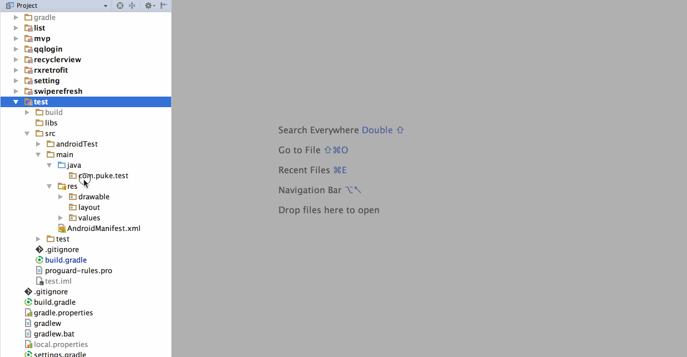</p>

<h3 id="toc_6">快速制作</h3>

<p>这里我们拿对一个 MVP 模板的抽取来举例，首先选中需要制作为模板的类文件（如果需要选中某个文件夹里的全部文件，可以直接选中该文件夹），然后按下启动改插件的快捷键ALT + T，便能看到如下界面<br/>
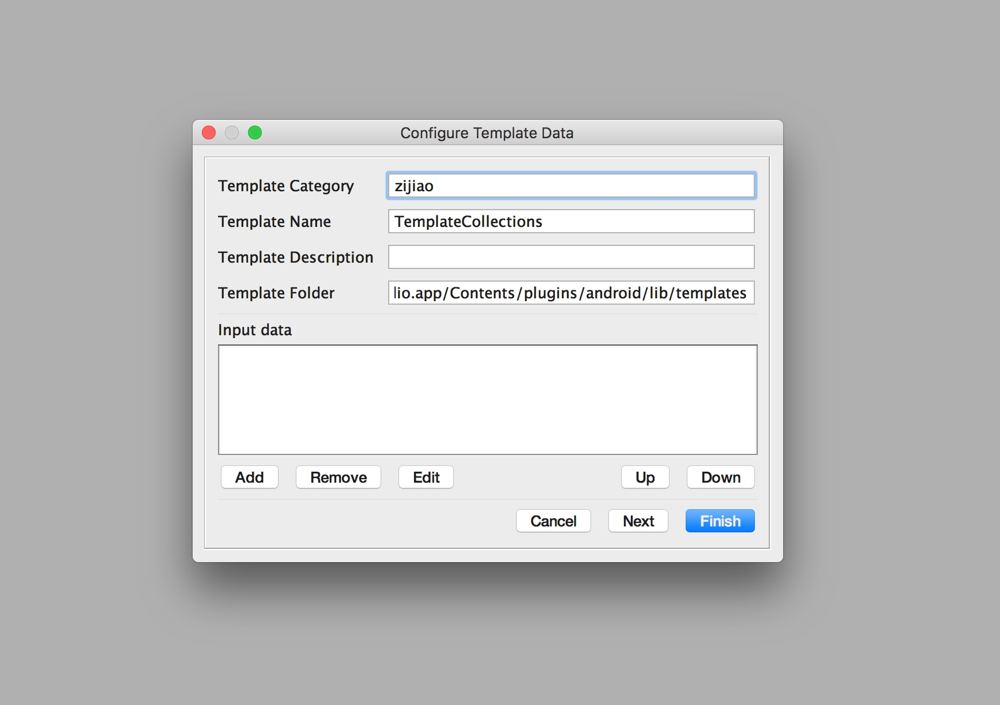</p>

<ul>
<li><code>Template Category</code> 对应模板的分类，对应选择导入模板时的模板分类，这里默认值是电脑的用户名。</li>
<li><code>Template Name</code> 对应模板名称，对应选择导入模板时的模板名称，默认值是当前的 Project 名称。</li>
<li><code>Template Description</code> 对应模板描述信息，对应导入模板时弹出的导入界面的文字描述，默认为空。</li>
<li><code>Template Folder</code> 对应生成模板所存放的位置，如果是 Mac 操作系统则默认为<code>/Applications/Android Studio.app/Contents/plugins/android/lib/templates</code>， Windows 系统的话由于差异比较大，就默认为空了，可以自行配置<code>[Android Studio安装目录]/plugins/android/lib/templates</code>（这里只需要配置一次即可，插件将自动保存该位置）。</li>
<li><code>Input data区域</code> （见下图）
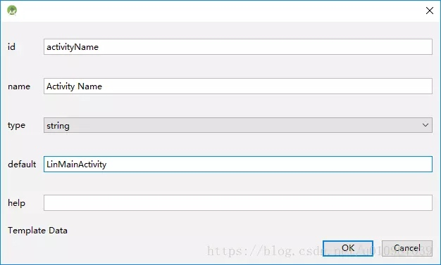</li>
</ul>

<p>如果你只是想简单抽取你写的这个模板，你只需要输入下<code>Template Name</code>和<code>Template Description</code>即可，当然如果你不想输入的话这也可以省略掉。接下来直接点击<code>Finish</code>，就能在 IDE 底部看到弹出如下图所示的提示，此时你已经制作成功，重启 IDE 即可使用该模板。<br/>
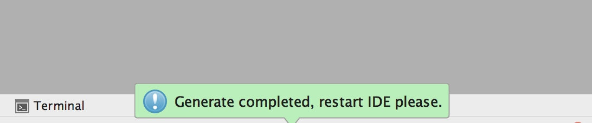</p>

<p>到这里，如果你了解<code>Android Studio Template</code>制作流程的话，你可能觉得相对于完全自己手动去做这样固然简单，但是灵活性上降低了不少。例如模板中有组价依赖关系的时候，你需要在<code>build.gradle.ftl</code>中去添加对应的依赖；导入模板之后你想自动打开某个文件时，你需要编辑<code>recipe.xml.ftl</code>；选择模板适用于哪个版本时，你需要编辑<code>template.xml</code>等等。如果你有这方面的需求，可以点击<code>Next</code>来代替<code>Finish</code>，点击之后你就能看到如下界面，在这里提供了所有你需要关注的配置文件的编辑，编辑完成直接点击OK开始自动生成。<br/>
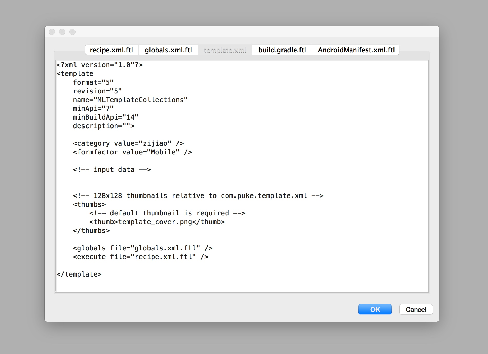</p>

<h3 id="toc_7">配置模板变量</h3>

<p>在上面的界面中可以看到<code>Input data</code>区域，它对应着导入模板时的变量输入，如果你想增强模板的可配性将会用到它，它就对应着 AS 模板中<code>template.xml</code>的<code>&lt;parameter /&gt;</code>标签，也就是下面的每一个配置项。</p>

<p>关于<code>Input data</code>的使用，先解释下每个属性对应的含义</p>

<ul>
<li><code>id</code> 变量名，必须和模板中使用的变量名对应，必填</li>
<li><code>name</code> 变量简介，必填</li>
<li><code>type</code> 变量类型，string 和 boolean 两种，通过下拉框选择，必填</li>
<li><code>default</code> 变量对应的默认值，选填</li>
<li><code>help</code> 添加该变量时的提示信息，选填</li>
</ul>

<h4 id="toc_8">示例</h4>

<p>假设待导出的模板文件是<code>UserActivity</code>类，代码如下：</p>

<pre><code class="language-java">public class UserActivity extends Activity {
    
    private TextView mUserName;

    @Override
    protected void onCreate(Bundle savedInstanceState) {
      super.onCreate(savedInstanceState);
      setContentView(R.layout.activity_user);
      mUserName = (TextView) findViewById(R.id.user_name);
    }
}
</code></pre>

<p>代码很简单，假设我们想让引入模板时<code>mUserName</code>属性名是可配的，并且在 <code>Activity</code> 中是否调用 <code>setContentView</code> 方法也是可配的，那我们就需要这样改写该类：</p>

<pre><code class="language-java">public class UserActivity extends Activity {

    private TextView ${textViewName};

    @Override
    protected void onCreate(Bundle savedInstanceState) {
        super.onCreate(savedInstanceState);
        &lt;#if setContentView&gt;
        setContentView(R.layout.activity_user);
        ${textViewName} = (TextView) findViewById(R.id.user_name);
        &lt;/#if&gt;
    }
}
</code></pre>

<p>我们用到了<code>textViewName</code>和<code>setContentView</code>两个变量，所以当我们按下<code>ALT + T</code>时就要在对应的 <code>Input data</code> 区域点击Add来添加两个对应的变量。</p>

<table>
<thead>
<tr>
<th style="text-align: center">Input data</th>
<th style="text-align: center">textViewName</th>
<th style="text-align: center">setContentView</th>
</tr>
</thead>

<tbody>
<tr>
<td style="text-align: center">id</td>
<td style="text-align: center">textViewName</td>
<td style="text-align: center">setContentView</td>
</tr>
<tr>
<td style="text-align: center">type</td>
<td style="text-align: center">string</td>
<td style="text-align: center">boolean</td>
</tr>
<tr>
<td style="text-align: center">name</td>
<td style="text-align: center">TextView 属性名</td>
<td style="text-align: center">是否设置布局</td>
</tr>
<tr>
<td style="text-align: center">default</td>
<td style="text-align: center">mUserName</td>
<td style="text-align: center">false</td>
</tr>
<tr>
<td style="text-align: center">help</td>
<td style="text-align: center">输入TextView对应的属性名</td>
<td style="text-align: center">勾选则设置布局文件，反之不设置</td>
</tr>
</tbody>
</table>

<p>添加完模板变量后导出，重启 IDE 选择导入该模板，此时便能看到刚才配置的两个变量，你可以输入不同的值来验证模板的正确性。</p>

<p>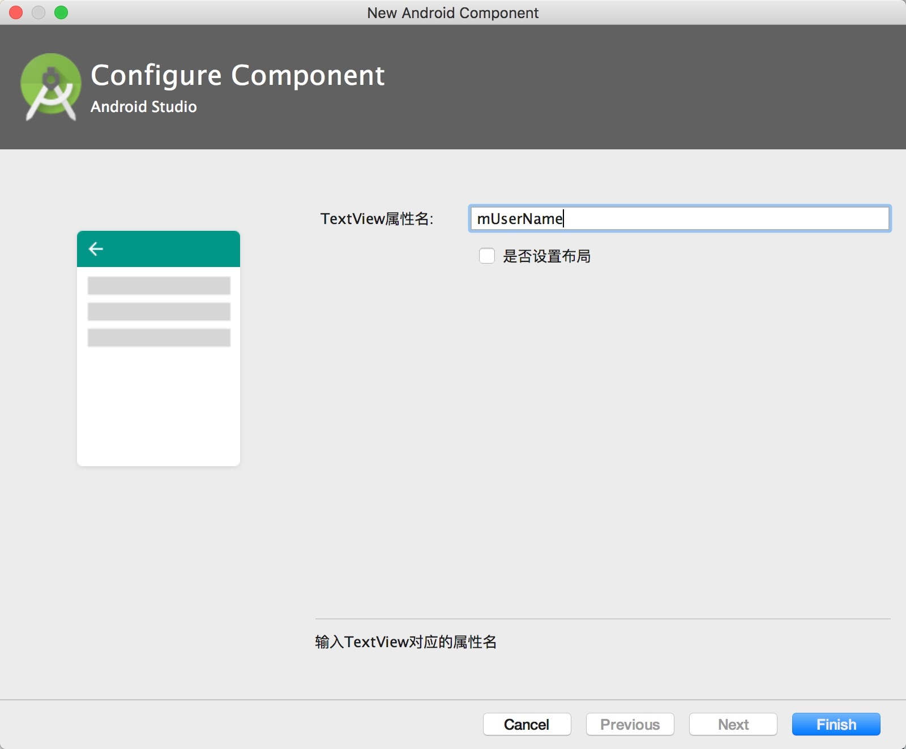</p>

<h3 id="toc_9">添加模板依赖</h3>

<p>模板中需要添加 <code>gradle</code> 依赖时，点击Next在第二个页面中<code>build.gradle.ftl</code>添加如下所示对应的仓库和依赖即可。</p>

<pre><code class="language-text">repositories {
    // 如果仓库是jcenter()，则可省略
    jcenter()
}

dependencies {
    compile &#39;io.reactivex.rxjava2:rxjava:2.0.6&#39;
    compile &#39;io.reactivex.rxjava2:rxandroid:2.0.1&#39;
}
</code></pre>

<h3 id="toc_10">修改template.xml文件</h3>

<p>template.xml这个是模板配置文件，打开可以看到:</p>

<pre><code class="language-markup">&lt;?xml version=&quot;1.0&quot;?&gt;
&lt;template
    format=&quot;5&quot;
    revision=&quot;6&quot;
    name=&quot;Login Activity&quot;
    description=&quot;Creates a new login activity, allowing users to optionally sign in with Google+ or enter an email address and password to log in to or register with your application.&quot;
    requireAppTheme=&quot;true&quot;
    minApi=&quot;8&quot;
    minBuildApi=&quot;14&quot;&gt;

    &lt;dependency name=&quot;android-support-v4&quot; revision=&quot;8&quot; /&gt;

    &lt;category value=&quot;Activity&quot; /&gt;
    &lt;formfactor value=&quot;Mobile&quot; /&gt;

    &lt;parameter
        id=&quot;activityClass&quot;
        name=&quot;Activity Name&quot;
        type=&quot;string&quot;
        constraints=&quot;class|unique|nonempty&quot;
        default=&quot;LoginActivity&quot;
        help=&quot;The name of the activity class to create&quot; /&gt;

    &lt;parameter
        id=&quot;layoutName&quot;
        name=&quot;Layout Name&quot;
        type=&quot;string&quot;
        constraints=&quot;layout|unique|nonempty&quot;
        suggest=&quot;${activityToLayout(activityClass)}&quot;
        default=&quot;activity_login&quot;
        help=&quot;The name of the layout to create for the activity&quot; /&gt;

    &lt;parameter
        id=&quot;activityTitle&quot;
        name=&quot;Title&quot;
        type=&quot;string&quot;
        constraints=&quot;nonempty&quot;
        default=&quot;Sign in&quot;
        help=&quot;The name of the activity.&quot; /&gt;

    &lt;parameter
        id=&quot;parentActivityClass&quot;
        name=&quot;Hierarchical Parent&quot;
        type=&quot;string&quot;
        constraints=&quot;activity|exists|empty&quot;
        default=&quot;&quot;
        help=&quot;The hierarchical parent activity, used to provide a default implementation for the &#39;Up&#39; button&quot; /&gt;

    &lt;parameter
        id=&quot;packageName&quot;
        name=&quot;Package name&quot;
        type=&quot;string&quot;
        constraints=&quot;package&quot;
        default=&quot;com.mycompany.myapp&quot; /&gt;

    &lt;thumbs&gt;
        &lt;thumb&gt;template_login_activity.png&lt;/thumb&gt;
    &lt;/thumbs&gt;

    &lt;globals file=&quot;globals.xml.ftl&quot; /&gt;
    &lt;execute file=&quot;recipe.xml.ftl&quot; /&gt;

&lt;/template&gt;
</code></pre>

<ol>
<li>外面的template标签写的是基本的配置：包括模板名，描述，是否请求系统主题等等。我们可以将其修改为中文。<br/>
<code>
&lt;template<br/>
format=&quot;5&quot;<br/>
revision=&quot;6&quot;<br/>
name=&quot;登陆界面&quot;<br/>
description=&quot;创建一个新的登陆界面&quot;<br/>
requireAppTheme=&quot;true&quot;<br/>
minApi=&quot;8&quot;<br/>
minBuildApi=&quot;14&quot;&gt;
</code></li>
<li>parameter标签<br/>
参数，也就是要在创建的时候自己设置的东西。每一个 parameter标签对应一个参数。这些参数会显示在创建页面上。也修改为中文。</li>
</ol>

<blockquote>
<ul>
<li>id ：唯一标识，最终通过该属性的值，获取用户输入值（文本框内容，是否选中）</li>
<li>name：界面上的类似label的提示语</li>
<li>type : 输入值类型</li>
<li>constraints：填写值的约束</li>
<li>suggest：建议值，比如填写ActivityName的时候，会给出一个布局文件的建议值。</li>
<li>default:默认值</li>
<li>help:底部显示的提升语</li>
</ul>
</blockquote>

<p>为方便用户输入Activity名称或Layout名称，自动提示Layout或Activity名称，需要在parameter中添加两个属性：  </p>

<pre><code class="language-text">constraints=&quot;class|unique|nonempty&quot;
suggest=&quot;${layoutToActivity(layoutName)}&quot;
suggest=&quot;${activityToLayout(activityClass)}&quot;
</code></pre>

<p><strong>示例</strong></p>

<pre><code class="language-markup">&lt;parameter
        id=&quot;activityClass&quot;
        name=&quot;活动类名&quot;
        type=&quot;string&quot;
        constraints=&quot;class|unique|nonempty&quot;
        default=&quot;LoginActivity&quot;
        help=&quot;填写所创建的活动类的名称&quot; /&gt;

    &lt;parameter
        id=&quot;layoutName&quot;
        name=&quot;布局文件名&quot;
        type=&quot;string&quot;
        constraints=&quot;layout|unique|nonempty&quot;
        suggest=&quot;${activityToLayout(activityClass)}&quot;
        default=&quot;activity_login&quot;
        help=&quot;填写所创建的布局文件的名称&quot; /&gt;

    &lt;parameter
        id=&quot;activityTitle&quot;
        name=&quot;标题栏标题&quot;
        type=&quot;string&quot;
        constraints=&quot;nonempty&quot;
        default=&quot;Sign in&quot;
        help=&quot;The name of the activity.&quot; /&gt;

    &lt;parameter
        id=&quot;parentActivityClass&quot;
        name=&quot;父活动类&quot;
        type=&quot;string&quot;
        constraints=&quot;activity|exists|empty&quot;
        default=&quot;&quot;
        help=&quot;配置父活动类，用于返回上一级按钮&quot; /&gt;

    &lt;parameter
        id=&quot;packageName&quot;
        name=&quot;包名&quot;
        type=&quot;string&quot;
        constraints=&quot;package&quot;
        default=&quot;com.mycompany.myapp&quot; /&gt;
</code></pre>

<h3 id="toc_11">thumbs</h3>

<p>里面放置了样例图,可以尝试更换。</p>

<h3 id="toc_12">globals.xml.ftl</h3>

<p>还要引入的依赖和包。<br/>
定义了全局变量，并引用了一个内置的通用globals.xml.ftl</p>

<pre><code class="language-text">&lt;globals&gt;
    &lt;global id=&quot;hasNoActionBar&quot; type=&quot;boolean&quot; value=&quot;false&quot; /&gt;
    &lt;global id=&quot;isLauncher&quot; type=&quot;boolean&quot; value=&quot;${isNewProject?string}&quot; /&gt;
    &lt;global id=&quot;includePermissionCheck&quot; type=&quot;boolean&quot; value=&quot;${(targetApi gte 23)?string}&quot; /&gt;
    &lt;global id=&quot;GenericStringArgument&quot; type=&quot;string&quot; value=&quot;&lt;#if buildApi lt 19&gt;String&lt;/#if&gt;&quot; /&gt;
    &lt;#include &quot;../common/common_globals.xml.ftl&quot; /&gt;
&lt;/globals&gt;
</code></pre>

<h3 id="toc_13">recipe.xml.ftl</h3>

<p>指定资源文件的路径并相应的生成到我们的项目目录去：</p>

<pre><code class="language-text">&lt;recipe&gt;
   &lt;#if appCompat &amp;&amp; !(hasDependency(&#39;com.android.support:appcompat-v7&#39;))&gt;
       &lt;dependency mavenUrl=&quot;com.android.support:appcompat-v7:${buildApi}.+&quot; /&gt;
    &lt;/#if&gt;

    &lt;#if (buildApi gte 22) &amp;&amp; appCompat &amp;&amp; !(hasDependency(&#39;com.android.support:design&#39;))&gt;
        &lt;dependency mavenUrl=&quot;com.android.support:design:${buildApi}.+&quot; /&gt;
    &lt;/#if&gt;

    &lt;merge from=&quot;root/AndroidManifest.xml.ftl&quot;
             to=&quot;${escapeXmlAttribute(manifestOut)}/AndroidManifest.xml&quot; /&gt;

    &lt;merge from=&quot;root/res/values/dimens.xml&quot;
             to=&quot;${escapeXmlAttribute(resOut)}/values/dimens.xml&quot; /&gt;

    &lt;merge from=&quot;root/res/values/strings.xml.ftl&quot;
             to=&quot;${escapeXmlAttribute(resOut)}/values/strings.xml&quot; /&gt;

    &lt;instantiate from=&quot;root/res/layout/activity_login.xml.ftl&quot;
                   to=&quot;${escapeXmlAttribute(resOut)}/layout/${layoutName}.xml&quot; /&gt;

    &lt;instantiate from=&quot;root/src/app_package/LoginActivity.java.ftl&quot;
                   to=&quot;${escapeXmlAttribute(srcOut)}/${activityClass}.java&quot; /&gt;

    &lt;open file=&quot;${escapeXmlAttribute(srcOut)}/${activityClass}.java&quot; /&gt;

&lt;/recipe&gt;
</code></pre>

<blockquote>
<ul>
<li><strong>copy :</strong>从root中copy文件到我们的目标目录，比如我们的模板Activity需要使用一些图标，那么可能就需要使用copy标签将这些图标拷贝到我们的项目对应文件夹。</li>
<li><strong>merge :</strong> 合并的意思，比如将我们使用到的strings.xml合并到我们的项目的stirngs.xml中</li>
<li><strong>instantiate :</strong> 和copy类似，但是可以看到上例试将ftl-&gt;java文件的，也就是说中间会通过一个步骤，将ftl中的变量都换成对应的值，那么完整的流程是ftl-&gt;freemarker process -&gt; java。</li>
<li><strong>open:</strong>在代码生成后，打开指定的文件，比如我们新建一个Activity后，默认就会将该Activity打开。</li>
</ul>
</blockquote>

<h3 id="toc_14">增加kotlin模板</h3>

<p><strong>1. 创建Kotlin模板</strong></p>

<p>在创建的Java模板下直接创建kotlin模板，根据Java模板文件进行修改</p>

<p><strong>2. 修改recipe.xml.ftl</strong><br/>
打开recipe.xml.ftl将<code>java</code>改为<code>${ktOrJavaExt}</code>变量。</p>

<pre><code class="language-text">&lt;recipe&gt;
    &lt;instantiate from=&quot;root/src/app_package/LinActivity.${ktOrJavaExt}.ftl&quot;
        to=&quot;${escapeXmlAttribute(srcOut)}/${activityClass}.${ktOrJavaExt}&quot; /&gt;

    &lt;instantiate from=&quot;root/res/layout/activity_lin.xml.ftl&quot;
        to=&quot;${escapeXmlAttribute(resOut)}/layout/${layoutName}.xml&quot; /&gt;
&lt;/recipe&gt;
</code></pre>

<p><strong>3. 修改globals.xml.ftl</strong><br/>
打开<code>globals.xml.ftl</code>添加<code>ktOrJavaExt</code>变量声明：</p>

<pre><code class="language-text">&lt;#assign generateKotlin=(((includeKotlinSupport!false) ||(language!&#39;Java&#39;)?string == &#39;Kotlin&#39;))&gt;
&lt;global id=&quot;generateKotlin&quot; type=&quot;boolean&quot; value=&quot;${generateKotlin?string}&quot; /&gt;
&lt;global id=&quot;ktOrJavaExt&quot; type=&quot;string&quot; value=&quot;${generateKotlin?string(&#39;kt&#39;,&#39;java&#39;)}&quot; /&gt;
</code></pre>

<p>接着重启就可以创建Kotlin模板文件</p>


    

      </div>

      <div class="row">
        <div class="large-6 columns">
        <p class="text-left" style="padding:15px 0px;">
      
          <a href="15767453112302.html" 
          title="Previous Post: 添加环境变量">&laquo; 添加环境变量</a>
      
        </p>
        </div>
        <div class="large-6 columns">
      <p class="text-right" style="padding:15px 0px;">
      
          <a  href="15779319049745.html" 
          title="Next Post: Android Studio之Debug: 运行期代码植入">Android Studio之Debug: 运行期代码植入 &raquo;</a>
      
      </p>
        </div>
      </div>
      <div class="comments-wrap">
        <div class="share-comments">
          

          

          
        </div>
      </div>
    </div><!-- article-wrap -->
  </div><!-- large 8 -->


 <div class="large-4 medium-4 columns">
  <div class="hide-for-small">
    <div id="sidebar" class="sidebar">
          <div id="site-info" class="site-info">
            
                <h1>MagicalRice的Blog</h1>
                <div class="site-des">技术博客</div>
                <div class="social">


  <a target="_blank" class="rss" href="atom.xml" title="RSS">RSS</a>
                
              	 </div>
          	</div>

             

              <div id="site-categories" class="side-item ">
                <div class="side-header">
                  <h2>Categories</h2>
                </div>
                <div class="side-content">

      	<p class="cat-list">
        
            <a href="Android.html"><strong>Android</strong></a>
        
            <a href="%E9%9A%8F%E6%89%8B%E8%AE%B0.html"><strong>随手记</strong></a>
        
            <a href="%E6%9C%8D%E5%8A%A1%E5%99%A8.html"><strong>服务器</strong></a>
        
            <a href="C++.html"><strong>C++</strong></a>
        
            <a href="UI.html"><strong>UI</strong></a>
        
            <a href="MySQL.html"><strong>MySQL</strong></a>
        
            <a href="%E7%AE%97%E6%B3%95.html"><strong>算法</strong></a>
        
            <a href="Game.html"><strong>Game</strong></a>
        
            <a href="Python.html"><strong>Python</strong></a>
        
            <a href="%E8%B7%A8%E5%B9%B3%E5%8F%B0%E5%BC%80%E5%8F%91.html"><strong>跨平台开发</strong></a>
        
            <a href="Mac.html"><strong>Mac</strong></a>
        
            <a href="%E5%85%B6%E4%BB%96.html"><strong>其他</strong></a>
         
        </p>


                </div>
              </div>

              <div id="site-categories" class="side-item">
                <div class="side-header">
                  <h2>Recent Posts</h2>
                </div>
                <div class="side-content">
                <ul class="posts-list">
	      
		      
			      <li class="post">
			        <a href="16136612078589.html">继承</a>
			      </li>
		     
		  
		      
			      <li class="post">
			        <a href="16127020620600.html">封装</a>
			      </li>
		     
		  
		      
			      <li class="post">
			        <a href="16106747969027.html">GitHub搜索技巧</a>
			      </li>
		     
		  
		      
			      <li class="post">
			        <a href="16104540799826.html">Intellij IDEA插件开发入门</a>
			      </li>
		     
		  
		      
			      <li class="post">
			        <a href="16066640335833.html">Jetpack学习 - WorkManager</a>
			      </li>
		     
		  
		      
		  
		      
		  
		      
		  
		      
		  
		      
		  
		      
		  
		      
		  
		      
		  
		      
		  
		      
		  
		      
		  
		      
		  
		      
		  
		      
		  
		      
		   
		  		</ul>
                </div>
              </div>
        </div><!-- sidebar -->
      </div><!-- hide for small -->
</div><!-- large 4 -->

</div><!-- row -->

 <div class="page-bottom clearfix">
  <div class="row">
   <p class="copyright">Copyright &copy; 2015
Powered by <a target="_blank" href="http://www.mweb.im">MWeb</a>,&nbsp; 
Theme used <a target="_blank" href="http://github.com">GitHub CSS</a>.</p>
  </div>
</div>

        </section>
      </div>
    </div>


  


<script src="asset/prism.js"></script>


<style type="text/css">
figure{margin: 0;padding: 0;}
figcaption{text-align:center;}

/* PrismJS 1.14.0
 http://prismjs.com/download.html#themes=prism&languages=markup+css+clike+javascript */
/**
 * prism.js default theme for JavaScript, CSS and HTML
 * Based on dabblet (http://dabblet.com)
 * @author Lea Verou
 */

code[class*="language-"],
pre[class*="language-"] {
    color: black;
    background: none;
    text-shadow: 0 1px white;
    font-family: Consolas, Monaco, 'Andale Mono', 'Ubuntu Mono', monospace;
    text-align: left;
    white-space: pre;
    word-spacing: normal;
    word-break: normal;
    word-wrap: normal;
    line-height: 1.5;
    
    -moz-tab-size: 4;
    -o-tab-size: 4;
    tab-size: 4;
    
    -webkit-hyphens: none;
    -moz-hyphens: none;
    -ms-hyphens: none;
    hyphens: none;
}

pre[class*="language-"]::-moz-selection, pre[class*="language-"] ::-moz-selection,
code[class*="language-"]::-moz-selection, code[class*="language-"] ::-moz-selection {
    text-shadow: none;
    background:#b3d4fc;
}

pre[class*="language-"]::selection, pre[class*="language-"] ::selection,
code[class*="language-"]::selection, code[class*="language-"] ::selection {
    text-shadow: none;
    background: #b3d4fc;
}

@media print {
    code[class*="language-"],
    pre[class*="language-"] {
        text-shadow: none;
    }
}

/* Code blocks */
pre[class*="language-"] {
    padding: 1em;
    margin: .5em 0;
    overflow: auto;
}

:not(pre) > code[class*="language-"],
pre[class*="language-"] {
    background: #F7F7F7;
}

/* Inline code */
:not(pre) > code[class*="language-"] {
    padding: .1em;
    border-radius: .3em;
    white-space: normal;
}

.token.comment,
.token.prolog,
.token.doctype,
.token.cdata {
    color: slategray;
}

.token.punctuation {
    color: #999;
}

.namespace {
    opacity: .7;
}

.token.property,
.token.tag,
.token.boolean,
.token.number,
.token.constant,
.token.symbol,
.token.deleted {
    color: #905;
}

.token.selector,
.token.attr-name,
.token.string,
.token.char,
.token.builtin,
.token.inserted {
    color: #690;
}

.token.operator,
.token.entity,
.token.url,
.language-css .token.string,
.style .token.string {
    color: #9a6e3a;
    background: hsla(0, 0%, 100%, .5);
}

.token.atrule,
.token.attr-value,
.token.keyword {
    color: #07a;
}

.token.function,
.token.class-name {
    color: #DD4A68;
}

.token.regex,
.token.important,
.token.variable {
    color: #e90;
}

.token.important,
.token.bold {
    font-weight: bold;
}
.token.italic {
    font-style: italic;
}

.token.entity {
    cursor: help;
}


pre[class*="language-"].line-numbers {
    position: relative;
    padding-left: 3.8em;
    counter-reset: linenumber;
}

pre[class*="language-"].line-numbers > code {
    position: relative;
    white-space: inherit;
}

.line-numbers .line-numbers-rows {
    position: absolute;
    pointer-events: none;
    top: 0;
    font-size: 100%;
    left: -3.8em;
    width: 3em; /* works for line-numbers below 1000 lines */
    letter-spacing: -1px;
    border-right: 1px solid #999;

    -webkit-user-select: none;
    -moz-user-select: none;
    -ms-user-select: none;
    user-select: none;

}

    .line-numbers-rows > span {
        pointer-events: none;
        display: block;
        counter-increment: linenumber;
    }

        .line-numbers-rows > span:before {
            content: counter(linenumber);
            color: #999;
            display: block;
            padding-right: 0.8em;
            text-align: right;
        }

</style>

  
    

    <script src="asset/js/foundation.min.js"></script>
    <script>
      $(document).foundation();
      function fixSidebarHeight(){
        var w1 = $('.markdown-body').height();
          var w2 = $('#sidebar').height();
          if (w1 > w2) { $('#sidebar').height(w1); };
      }
      $(function(){
        fixSidebarHeight();
      })
      $(window).load(function(){
          fixSidebarHeight();
      });
     
    </script>


  </body>
</html>
